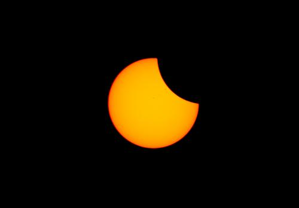
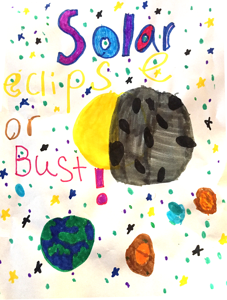
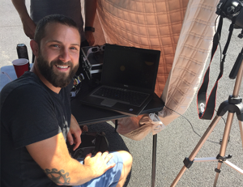
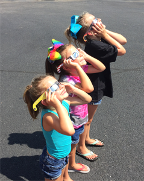
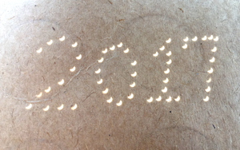
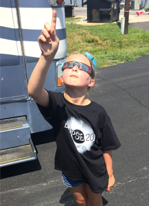
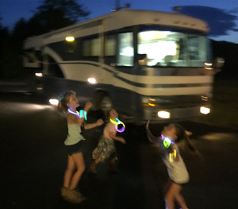
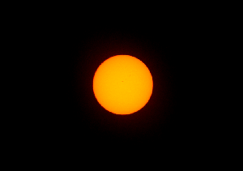
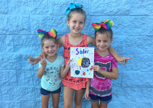

When I was a kid, Star Trek was my window to Space. My imagination was bounded only by the distance the warp drive could take me. Later, my love of space swelled along with the Space Shuttle Program in the Eighties and Nineties. My palate grew even more when I discovered the Apollo missions and the Space Race of the Sixties. The possibilities that the universe contained were seductively shrouded in the inky void above and nothing could hinder my lust for that Infinite Mystery. Nothing, that is, except for the passage of time.

Since those whimsical days of my youth, I’ve had to grow up. I begrudgingly became an adult. I set my alarm, went to class, then started a career. I got married and had children and bought a fixed domestic dwelling for which the roof blocked my view of the stars. The world shrank. The wormholes of my imagination began to collapse and those far off places of my imagination became less vivid.
I’m not upset by this change, necessarily. I know that this is how Life goes. We grow up and we learn about the world and eventually become jaded by the redundant beauty all around us. See, it’s not the Universe’s fault that our eyes become glossed over staring at the wonder that surrounds us. It’s us. It’s our fault we lose that child-like appreciation. And it’s up to us to put in the effort to see it again.

Some years ago during an evening of nostalgic curiosity, I grabbed some binoculars and scanned the dark navy blue sky. I stumbled upon Jupiter and was startled to see four tiny stars all lined up on either side of the King of the Planets. After a one-minute research project I learned they were actually the four Jovian moons! I could see the moons of another planet millions of miles away – just with a pair of simple binoculars I had collecting dust in the closet!
That moment was a game changer for me. I went on to buy a telescope and saw even more mind-blowing things. Then another telescope – one with a mount that could counter-act the motion of the spinning Earth beneath me. (I wanted a steady eye on the Heavens.) And since I got tired of lugging that thing outside and setting it up whenever I wanted to get a glimpse of the treasures hidden above, my dad helped me build an observatory in my backyard to house it.

I was able to take pictures of stars exploding and dying in other galaxies. (Really!) I took baby pictures of stars coddled in their warm stellar nurseries. (No lie.) I saw the halos of comets being heated by the radiation of the Sun, and I saw the Earth block our view of the Moon during lunar eclipses. (This gargantuan thing we’re riding on really does move in space!) I’ve even seen the gravesites of long dead stars whose life had already played out on this cosmic timescale. I’ve seen all of these things and none of it prepared me for the experience I had during the total solar eclipse of 2017.
Nine of us family and friends made the 400-mile trek from Columbus, Ohio to a small town in Kentucky named Kuttawa on August 20th – a day early in order to beat the rush of what was widely touted as possibly the greatest traffic jam in American history. Luckily, we made it there with very little traffic (although coming back was a different story). The next day, we turned the RV into a solar eclipse base camp. I set up my laptop and properly filtered camera, made sure calibration was complete, and was ready to capture whatever amateur images I could of this once in a lifetime opportunity.

We waited along with a couple dozen or so other people in the strip mall parking lot, all with our cameras pointed high and anticipation levels higher. Again, lucky for us, the sky was a clear blue with only a smattering of high, thin, wispy clouds and the horizon framed with some larger puffy clouds for aesthetic purposes. The air was hot and humid but we didn’t care; the sweat and sunscreen was a good sign that we’d have excellent seats for the show.
The children, dressed in their newly acquired “2017 Eclipse!” tee shirts looked skyward through their comically large, sci-fi-silver spectacles. Of course the kids were excited but what surprised me the most was how eager the adults were. Except for myself, everyone else had little to no interest in astronomical -anything- so their enthusiasm was delightfully welcome. We were all living in the moment whether we ever thought we’d find ourselves in this place and time or not.
Right on time, the first hints of the moon passing in front of the sun was made evident by the enlarged view on the laptop screen. The slight indentation of the normally perfectly round sun drew giggles from the children and “ohhhs” from the adults. Moments later the same was visible with the naked eye behind protective glasses that turned the blinding light of the sun into a burnt orange disk surrounded by blackness. We were all instantly hooked. It was really happening!
Over the next hour or so, I recalled the plethora of articles I read and interviews I heard of professional astronomers and eclipse chasers attempting to describe the experience. They all said that there is no comparison to the experience of a total solar eclipse. If you were out of the range of totality (the area of the planet where the moon completely blocks out the entire sun), it’s just not the same; not 80%, not 90%, not even 99% is anywhere near the experience you get with 100% totality. I trusted them. That’s why we made the 400-mile trip instead of staying home to see 86%.

They described peoples’ reactions to the first time they saw totality: they told how grade-schoolers to great-grandparents would stand in awe, jaws agape, or shiver uncontrollably, or shriek with excitement, or even succumb to tears. Sure, I thought, it would be amazing… but I’ve seen some amazing things in my life including some of the most astounding astronomical spectacles and I was positive I was prepared. I couldn’t have been more wrong. Literally nothing could have prepared me for what was about to happen.
Tensions rose as the copper penny in the sky started to look more like Pac-Man with his mouth wide open. There was a slight change in temperature and the sky looked eerily dim which only accentuated the mood. Honestly, I wasn’t convinced it was really going to happen. Are we really going to get to see this? Are we sure we were in the right spot? Was someone’s calculations wrong? For us to be in this exact spot perfectly aligned in the place with the greatest duration of totality with not a cloud in sight was just too good to be true. We had the best seats on the planet and the Moon was right on schedule.

The time had arrived. We were mere moments away from totality. I abandoned my camera in order to maximize my experience. I wanted to fully embrace this so-called ‘magical’ cosmic moment. We all gathered together in the center of a blacktop oasis and were giddy with excitement as the sky grew markedly darker – almost like a localized dusk that the rest of the globe ignored. Only a sliver of light remained visible through our cardboard eclipse glasses, although without the glasses the light was still unbearable to look at with the naked eye. We looked to the northwest and were almost frightened by the shadow that sped toward us, overtaking us without our permission.
Then it happened. Totality.
Like Jodie Foster’s character in Carl Sagan’s ‘Contact,’ “They should have sent a poet.” I don’t know how I could possibly describe it. I could tell you about the unnerving, gaping black hole in the sky where the old familiar Sun used to be. I could describe the angelic silver rays radiating away from the almost sinister darkness and how the corona was a wonderfully welcome relief to the burnt reds and oranges we were so used to only seconds prior. I could describe the sky that just turned from a normal summertime blue to an early nighttime blue-black, complete with shining stars and planets making the rarest of daytime appearances… I could, but none of it would do it justice.
No picture could ever come close to capturing what we saw in those two and a half minutes – believe me: afterwards, I searched through them all. No movie could accurately represent the grandeur we witnessed, even though in some ways it felt like a movie. It wasn’t real – it couldn’t have been! I can still see it in my mind’s eye, that black hole in the sky rimmed with the most unimaginable brilliant silver light. I can’t be sure that memory wasn’t a scene from the latest big-budget sci-fi movie. Was it The Truman Show? Did someone replace the sky with a city-sized, domed movie screen?

I can’t describe what we saw because it wasn’t simply what we saw. We were experiencing an event that was so much bigger than any of us. It is not an exaggeration when I say that it was the most fascinating, exhilarating, beautiful thing I have ever experienced. For the skeptical: there are no hyperboles in this writing. I’m one of you. And I can honestly say that I came to Kentucky with some fairly high expectations, but what I saw that day blew any preconceived notions completely out of the water. And guess what? I’m not too proud to say that I teared-up. The whole thing caught me – all of us – off guard so much that I became a little overwhelmed with emotion and joy that my eyes welled up and I shed a tear or two.
I hugged my wife. I glanced down at my daughter and saw the innocent wonder in her eyes I had longed for and held back another tear, one of pride and optimism for her. The nine of us were all a bit stunned and weren’t exactly sure what to do with ourselves. We laughed and looked around and tried to take in as much as possible. I’m sure an outside observer would have been very confused and tickled by the way we were acting, but none of us thought about that for a single second. We were too caught up in the moment to be self-conscious. There were hoots and hollers from the crowd, people cheering and throwing high-fives, along with some hugs and simple mesmerized smiles. We all knew we were experiencing something special. And then it was over.
A blinding ray of light streamed from the edge of the moon and the fleeting moments of totality were over. We quickly put on our glasses again but this time were saddened by what we saw. The second half of an eclipse is visually identical to the first half, but what was once an enthralling sight leading up to the main event had turned into despair compared to what we had just witnessed. It was like the feeling of the trip home after a much-anticipated vacation. Personally, the thrill had left me a bit numb for the next few hours. Had I really just experienced that?

We quickly gathered our thoughts and our things and got on the road even before the eclipse had finished. If we didn’t have many hours of driving ahead of us we would have stayed, but the thought of millions of people fighting to get home before work the next day forced us to leave prematurely. And it was a good thing we did because the aforementioned “greatest traffic jam in history” most-likely came to fruition. It took us over double the amount of time to get home as it did to get there. One thing is for certain though: it was all worth it.
Something happened to me during those few moments of totality. I truly understand now that it’s not Nature’s fault that we are not constantly awed by Her beauty; it really is our bored, cynical perception that blinds us. Of course, a total solar eclipse is an extremely rare event that few of us are lucky enough to experience, but it is still a natural event nonetheless. Nature is all around us all the time. We just need to take the time to slow down and appreciate this thing we call Life and our intricately intertwined place within the universe.

It’s such a rare, alien, and unique experience, one that can’t simply be recreated even if we wanted to, say, with some gigantic balloon in the sky, it simply doesn’t work that way. I’m happy beyond words that I not only got to witness the eclipse, but that I got to share it with some of the people I love and care about the most.
Will I ever be able to recapture that moment, that feeling again? I don’t know. And frankly, I don’t care. ‘It is better to have loved and lost than to have never loved at all.’ Being someone who doesn’t believe in the supernatural, that was the closest I’ve ever had to a “spiritual” experience. And let me tell you, it did its job; it literally took my breath away. If I were a believer, I would believe.
It has taken me a few days since the solar eclipse to write this because I’ve been slowly becoming accustomed to the fact that the tide has turned, the switch has flipped. Instead of the World being small, it’s my domesticated life that has shrank after being shrouded in that magnificent shadow. I’m on the flip side of the mirror where youthful awareness resides. I was ‘snapped out of it’ by Nature’s biggest sucker punch. And I’ve never been happier to be punched in the gut. It was a reminder… no, a slap in the face that this Universe really is as remarkably astounding as it seemed when I was younger.